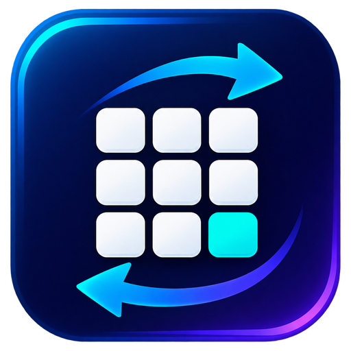
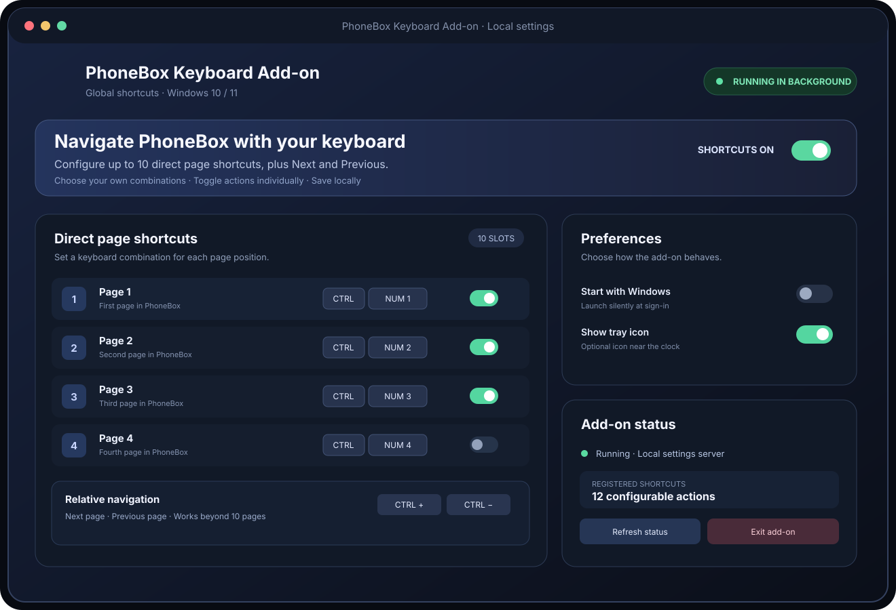
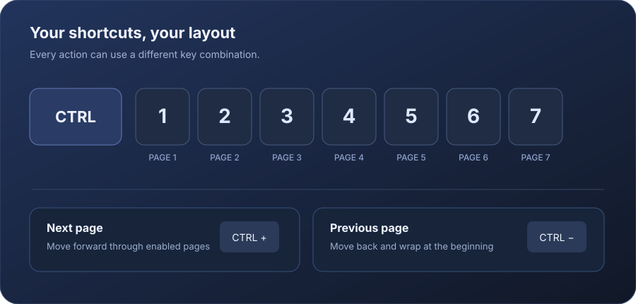
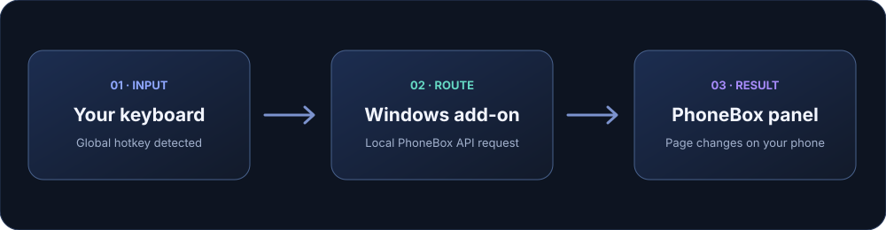

Atalhos do seu jeito
Configure até dez combinações diretas e escolha modificadores e teclas compatíveis com seu teclado.
10 páginas diretas
PhoneBox KeyboardAdd-on ProNavegue pelo painel do seu celular usando combinações globais do teclado. Configure cada tecla do seu jeito e deixe o PhoneBox sempre a um toque de distância — sem modificar o aplicativo original.

O add-on roda em segundo plano e transforma atalhos do teclado em comandos de navegação para o agente local do PhoneBox.
Configure até dez combinações diretas e escolha modificadores e teclas compatíveis com seu teclado.
10 páginas diretasAvance ou volte pela lista completa de páginas habilitadas, inclusive quando seu painel tiver mais de dez.
Navegação relativaOs atalhos funcionam enquanto você usa outros programas. Sem console ou janela principal.
Processo em segundo planoAtive ou desative cada ação, pause todos os atalhos e capture novas combinações no painel local.
Painel HTML localA interface de configurações pode ser alternada entre Português (Brasil) e English.
PT-BR / ENUsa a API local do agente. Atualizações do PhoneBox não substituem os arquivos deste complemento.
Projeto independenteOs atalhos padrão usam Ctrl + Numpad. No painel, você pode capturar outras combinações para cada ação.
Prévia dos atalhos padrão. Todas as combinações podem ser personalizadas no painel.


O pacote distribuído já inclui o executável Windows autocontido e os arquivos necessários para instalar.
Abra a página de Releases e baixe o pacote mais recente para Windows x64.
Abrir Releases ↗Extraia o ZIP, abra PowerShell na pasta extraída e execute o instalador incluído.
.\install.ps1 -LaunchSettingsTeste a conexão com o agente PhoneBox, capture suas combinações e salve.
Pronto para navegar.O essencial sobre compatibilidade, privacidade e funcionamento.
Não. É um complemento independente para Windows. Ele envia solicitações de navegação à API local do agente PhoneBox e não substitui nem injeta arquivos no aplicativo original.
Sim. As combinações são registradas globalmente pelo Windows. Se outro aplicativo já usar a mesma combinação, o registro pode falhar; escolha outra tecla no painel.
Não. O processo funciona em segundo plano, sem console ou janela principal. O ícone da bandeja é opcional e pode ser ativado nas preferências.
Sim. A partir do PhoneBox 0.9.31, Próxima e Anterior usam os webhooks nativos do agente, que acompanham a página realmente exibida e param nas extremidades.
O complemento não utiliza telemetria nem serviços em nuvem. Seu painel de configurações local escuta em loopback no próprio computador e a navegação é enviada ao agente local do PhoneBox.
Baixe a versão estável ou explore o código-fonte no GitHub.